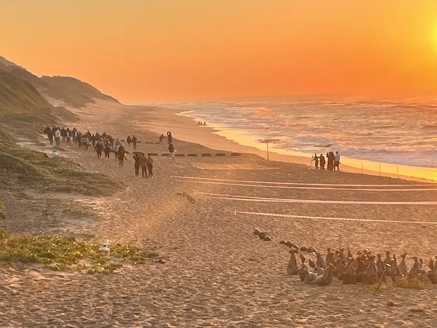

For a Saturday away from the beach, head to Shongweni for food, crafts and live music. The market has plenty to explore, but the best visit starts with knowing what you came for.

Choose your kind of Saturday
Shongweni Farmers & Craft Market trades every Saturday from 07:00 to 13:00. It sits in the Shongweni Valley, above Kirk Falls. The market's own site says it opens rain or shine, with stalls under cover.
If you want fresh produce, arrive with a shopping list and leave room to browse. If you want breakfast, music and a slower start, build the morning around food instead. Our advice is to pick one aim before you leave the Bluff.
Use two budgets, not one
Entry is listed as free by Durban Tourism. That does not mean food, crafts or children's activities are free. The traders sell fresh produce, deli goods, meals, art and handmade items.
Give yourself one amount for food you will eat there and another for things you might take home. It is an easy way to enjoy a snack without using up the money you meant to spend on a local maker.
Find the food court before you wander
The market's website has a grounds map. It marks the main entrance, food court, village stage and stall blocks. Open it before your visit, especially if your group wants different things.
For a first visit, we'd find somewhere to eat, walk one stall area, then decide whether to explore more. You will get a better feel for the food and crafts than if you rush from one end to the other.
Make space for children and music
Durban Tourism lists family activities such as a train ride, merry-go-rounds, play areas and a zipline. Local musicians perform on the market's two stages. Which activities run can depend on the day.
Let children choose one activity before you start shopping. Check its price, age rules and any queue at the site. You can then enjoy the music or browse stalls without promising every ride.
What about rain, access and dogs?
The operator describes the market as undercover and accessible. Durban Tourism also lists it as pet-friendly. Those facts make it worth considering when your group includes a pram, someone with limited mobility or a dog.
Still, check current access routes and pet rules with the market. Covered trading areas do not guarantee a dry walk from your car. Bring water, and check the day's weather before travelling.
Use the right address from the Bluff
Durban Tourism gives the location as 457 MR551 Road, Shongweni Resource Reserve, Shongweni. Save the market's own directions link, not just a search for ‘Durban market’, before setting off.
From 4Shore Guesthouse on the Bluff, check the live route and travel conditions. Driving can help if you expect to buy food or crafts to bring back. For another transport choice, see our getting around Durban guide.
Leave room for the rest of your stay
A market morning can be your main outing rather than the start of a packed day. Keep chilled food in mind if you plan other stops after shopping. Ask a trader how an item should be stored before taking it away.
If the market sparks ideas for your next meal, our Bluff meal-planning guide covers how to fit food into a stay. We think the best purchase is often the one you will use or enjoy, not the one that looked good for a moment.
FAQs: visiting Shongweni Market
What day does Shongweni Farmers & Craft Market open?
Its regular hours are Saturday, 07:00–13:00. The operator may advertise extra trading days, so check its latest calendar.
Do I need a ticket to enter?
Durban Tourism lists free market admission. Food, shopping and optional attractions may cost extra.
Is it worth going when it rains?
The operator says trading runs rain or shine and the market is under cover. Check current weather and access conditions.
Can I bring children or a dog?
Durban Tourism describes the market as family-friendly and pet-friendly. Confirm activity charges and current pet rules before you go.
Ask about staying on the Bluff
Winston is the owner and host of 4Shore Guesthouse and the person guests can contact directly about rooms, rates, availability and practical questions. You can reach him about a stay at 28 Foreshore Drive, Ocean View, Bluff, Durban, KwaZulu-Natal, 4052. Call +27 83 254 4825 or email 4shoredurban@gmail.com.